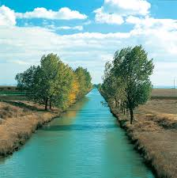

Problemas Ambientais: Água
 skip to main | skip to sidebar
skip to main | skip to sidebar
Problemas Ambientais
sexta-feira, 3 de outubro de 2008
Água
Na composição da água entram dois gases: duas partes de hidrogênio (símbolo: H) e uma parte de oxigênio (símbolo: O). Sua fórmula química é H2O.Três quartos da superfície da Terra são recobertos por água. Trata-se de quase 1,5 bilhão de km3 de água em todo o planeta, contando oceanos, rios, lagos, lençóis subterrâneos e geleiras. Parece inacreditável afirmar que o mundo está prestes a enfrentar uma crise de abastecimento de água. Mas é exatamente isso o que está para acontecer, pois apenas uma pequeníssima parte de toda a água do planeta Terra serve para abastecer a população.
Vinte e nove países já têm problemas com a falta d'água e o quadro tende a piorar. Uma projeção feita pelos cientistas indica que no ano de 2025, dois de três habitantes do planeta serão afetados de alguma forma pela escassez - vão passar sede ou estarão sujeitos a doenças como cólera e amebíase, provocadas pela má qualidade da água. É uma crise sem precedentes na história da humanidade. Em escala mundial, nunca houve problema semelhante.
Tanto que, até 30 anos atrás, quando os primeiros alertas foram feitos por um estudo da Organização das Nações Unidas (ONU), ninguém dava importância para a improvável ameaça.
A água e o corpo humano
Os primeiros seres vivos da Terra surgiram na água há cerca de 3,5 bilhões de anos. Sem ela, acreditam os cientistas, não existiria vida. A água forma a maior parte do volume de uma célula. No ser humano, ela representa cerca de 70% de seu peso. Uma pessoa de 65 kg, por exemplo, tem 45 kg de água em seu corpo. Daí sua importância no funcionamento dos organismos vivos. O transporte dos sais minerais e de outras substâncias, para dentro ou para fora da célula, é feito por soluções aquosas. Mesmo a regulagem da temperatura do corpo depende da água - é pelo suor que "expulsamos" parte do calor interno.
Dia Mundial da Água
A Organização das Nações Unidas instituiu, em 1992, o Dia Mundial da Água - 22 de março. O objetivo da data é refletir, discutir e buscar soluções para a poluição, desperdício e escassez de água no mundo todo. Mas há muitos outros desafios: saber usá-la de forma racional, conhecer os cuidados que devem ser tomados para garantir o consumo de uma água com qualidade e buscar condições para filtrá-la adequadamente, de modo a tirar dela o máximo proveito possível.
Os Direitos da Água
A ONU redigiu um documento intitulado Declaração Universal dos Direitos da Água. Logo abaixo, você vai ler os seus principais tópicos:
A água não é uma doação gratuita da natureza; ela tem um valor econômico: é rara e dispendiosa e pode escassear em qualquer região do mundo.
A utilização da água implica respeito à lei. Sua proteção constitui uma obrigação jurídica para todo homem ou grupo social que a utiliza.
O equilíbrio e o futuro de nosso planeta dependem da preservação da água e de seus ciclos. Estes devem permanecer intactos e funcionando normalmente para garantir a continuidade da vida sobre a Terra. Este equilíbrio depende da preservação dos mares e oceanos, por onde os ciclos começam.
Os recursos naturais de transformação da água em água potável são lentos, frágeis e muito limitados. Assim sendo, a água deve ser manipulada com racionalidade e precaução.
A água não é somente herança de nossos predecessores; ela é, sobretudo, um empréstimo a nossos sucessores. Sua proteção constitui uma necessidade vital, assim como a obrigação moral do homem para com as gerações presentes e futuras.
A água faz parte do patrimônio do planeta. Cada continente, cada povo, cada nação, cada região, cada cidade, cada cidadão é plenamente responsável pela água da Terra.
A água não deve ser desperdiçada, nem poluída, nem envenenada. De maneira geral, sua utilização deve ser feita com consciência para que não se chegue a uma situação de esgotamento ou de deterioração da qualidade das reservas atualmente disponíveis.
A água é a seiva de nosso planeta. Ela é condição essencial de vida de todo vegetal, animal ou ser humano. Dela dependem a atmosfera, o clima, a vegetação e a agricultura.
O planejamento da gestão da água deve levar em conta a solidariedade e o consenso em razão de sua distribuição desigual sobre a Terra.
A gestão da água impõe um equilíbrio entre a sua proteção e as necessidades econômica, sanitária e social.
Ciclo da Água
A água, na natureza, está sempre mudando de estado físico. Sob a ação do calor do Sol, a água da superfície terrestre se evapora e se transforma em vapor d'água. Este vapor sobe para a atmosfera e vai se acumulando. Quando encontra camadas frias, se condensa, formando gotinhas de água que juntam-se a outras gotinhas e formam as nuvens.
As nuvens formadas, quando ficam muito pesadas por causa da quantidade de água nelas contida, voltam à superfície terrestre em forma de chuva. Uma parte da água das chuvas penetra no solo e forma lençóis de água subterrâneos. Outra parte corre para os rios, mares, lagos, oceanos etc. Com o calor do Sol, a água volta a evaporar.
Água potável e água tratada
A água é considerada potável quando pode ser consumida pelos seres humanos. Infelizmente, a maior parte da água dos continentes está contaminada e não pode ser ingerida diretamente. Limpar e tratar a água é um processo bastante caro e complexo, destinado a eliminar da água os agentes de contaminação que possam causar algum risco para a saúde, tornando-a potável. Em alguns países, as águas residuais, das indústrias ou das residências, são tratadas antes de serem escoadas para os rios e mares. Estas águas recebem o nome de depuradas e geralmente não são potáveis. A depuração da água pode ter apenas uma fase de eliminação das substâncias contaminadoras, caso retorne ao rio ou ao mar, ou pode ser seguida de uma fase de tratamento completa, caso se destine ao consumo humano.
Água Contaminada
Um dos principais problemas que surgiram neste século é a crescente contaminação da água, ou seja, este recurso vem sendo poluído de tal maneira que já não se pode consumi-lo em seu estado natural. As pessoas utilizam a água não apenas para beber, mas também para se desfazer de todo tipo de material e sujeira. As águas contaminadas com numerosas substâncias recebem o nome de águas residuais. Se as águas residuais forem para os rios e mares, as substâncias que elas transportam irão se acumulando e aumentam a contaminação geral das águas. Isto traz graves riscos para a sobrevivência dos organismos.
Existem vários elementos contaminadores da água. Alguns dos mais importantes e graves são:
Os contaminadores orgânicos: são biodegradáveis e provêm da agricultura (adubos, restos de seres vivos) e das atividades domésticas (papel, excrementos, sabões). Se acumulados em excesso produzem a eutrofização das águas.
Os contaminadores biológicos: são todos aqueles microrganismos capazes de provocar doenças, tais como a hepatite, o cólera e a gastroenterite. A água é contaminada pelos excrementos dos doentes e o contágio ocorre quando essa água é bebida.
Os contaminadores químicos: os mais perigosos são os resíduos tóxicos, como os pesticidas do tipo DDT (chamados organoclorados), porque eles tendem a se acumular no corpo dos seres vivos. São também perigosos os metais pesados (chumbo, mercúrio) utilizados em certos processos industriais, por se acumularem nos organismos.
Mar
Desde a Antiguidade, os mares são os receptores naturais de grandes quantidades de resíduos. O Mediterrâneo, o mar do Norte, o canal da Mancha e os mares do Japão são alguns dos mais contaminados do mundo. Os agentes contaminadores que trazem maior risco ao ecossistema marinho são:
Os acidentes com barcos petroleiros que provocam grandes desastres ecológicos, poluindo a água do mar.
O petróleo, como conseqüência dos acidentes, descuidos ou ações voluntárias.
Os produtos químicos procedentes do continente, que chegam ao mar por meio da chuva e dos rios ou das águas residuais.
O problema já começou
A falta d'água já afeta o Oriente Médio, China, Índia e o norte da África. Até o ano 2050, as previsões são sombrias. A Organização Mundial da Saúde (OMS) calcula que 50 países enfrentarão crise no abastecimento de água.
China - O suprimento de água está no limite. A demanda agroindustrial e a população de 1,2 bilhão de habitantes fazem com que milhões de chineses andem quilômetros por dia para conseguir água.
Índia - Com uma população de 1 bilhão de habitantes, o governo indiano enfrenta o dilema da água constatando oesgotamento hídrico de seu principal curso-d'água, o rio Ganges.
Oriente Médio - A região inclui países como Israel, Jordânia, Arábia Saudita e Kuwait. Estudos apontam que dentro de 40 anos só haverá água doce para consumo doméstico. Atividades agrícolas e industriais terão de fazer uso de esgoto tratado.
Norte da África - Nos próximos 30 anos, a quantidade de água disponível por pessoa estará reduzida em 80%. A região abrange países situados no deserto do Saara, como Argélia e Líbia.
Motivo para guerras
A humanidade poderá presenciar no terceiro milênio uma nova modalidade de guerra: a batalha pela água. Um relatório do Banco Mundial de 1995 já anunciava que as guerras do próximo século serão motivadas pela disputa de água, diferentemente dos conflitos do século XX, marcados por questões políticas ou pela disputa do petróleo. Uma prévia do que pode ocorrer num futuro próximo aconteceu em 1967, quando o controle da água desencadeou uma guerra no Oriente Médio.
Naquele ano, os árabes fizeram obras para desviar o curso do rio Jordão e de seus afluentes. Ele é considerado o principal rio da região, nasce ao sul do Líbano e banha Israel e Jordânia. Com a nova rota, Israel perderia boa parte de sua capacidade hídrica. O governo israelense ordenou o bombardeamento da obra, acirrando ainda mais a rivalidade com os países vizinhos.
Riqueza brasileira
Quando o assunto é recursos hídricos, o Brasil é um país privilegiado. O território brasileiro detém 20% de toda a água doce superficial da Terra. A maior parte desse volume, cerca de 80%, localiza-se na Amazônia.
É naquela região desabitada que está a maior bacia fluvial do mundo, a Amazônica, com 6 milhões de quilômetros quadrados, abrangendo, além do Brasil, Bolívia, Peru, Equador e Colômbia. A segunda maior bacia hidrográfica do mundo, a Platina, também está parcialmente em território brasileiro.
Mas a nossa riqueza hídrica não se restringe às áreas superficiais: o aqüífero Botucatu/Guarani, um dos maiores do mundo, cobre uma área subterrânea de quase 1,2 milhão de quilômetros quadrados, 70% dos quais localiza-se em território brasileiro. O restante do potencial hídrico distribui-se de forma desigual pelo país. Apesar de tanta riqueza, as maiores concentrações urbanas encontram-se distantes dos grandes rios, como o São Francisco, o Paraná e o Amazonas.
Assim, dispor de grandes reservas hídricas não garante o abastecimento de água para toda a população.
Seca no Nordeste
Este é um problema que tem solução. Desviar parte da água do rio São Francisco para a região semi-árida é uma idéia antiga. Na prática, seria construída uma rede de canais para abastecer açudes dos Estados atingidos pela falta d'água, como Pernambuco, Ceará e Paraíba. Especialistas calculam que um projeto desse seria capaz de levar água a 200 municípios e 6,8 milhões de brasileiros.
Como economizar água
Não demore muito tempo no chuveiro. Em média, um banho consome 70 litros de água em apenas 5 minutos, ou seja, 25.550 litros por ano.
Preste atenção ao consumo mensal da conta de água. Você poderá descobrir vazamentos que significam enorme desperdício de água. Faça um teste; feche todas as torneiras e os registros de casa e verifique se o hidrômetro - aparelho que mede o consumo de água - sofre alguma alteração. Se alterar, o vazamento está comprovado.
Você pode economizar 16.425 litros de água por ano ao escovar os dentes, basta molhar a escova e depois fechar a torneira. Volte a abri-la somente para enxaguar a boca e a escova.
Prefira lavar o carro com balde em lugar da mangueira. O esguicho aberto gasta aproximadamente 600 litros de água. Se você usar balde, o consumo cairá para 60 litros.
Cuidado: Nada de "varrer" quintais e calçadas com esguicho; use a vassoura!
Curiosidades
Cada brasileiro gasta 300 litros de água por dia. Apenas metade disso seria suficiente para suprir todas as necessidades. Além disso, grande parte dos reservatórios está contaminada, principalmente em regiões mais populosas.
Na maioria dos países, é no campo que ocorre o maior consumo de água: a agricultura intensiva consome mais de quinhentos litros por pessoa ao dia. De 1900 até os nossos dias, a superfície de cultivo irrigado triplicou. Os sistemas tradicionais de irrigação aproveitam apenas 40% da água que utilizam. O resto evapora ou se perde.
Então,por mais que você tenha ouvido isso:economize água.Isto é sério.
Postado por Cassiana, Rachel, Gabriela, Alunas do Luterano Moinho Velho às 06:50
Nenhum comentário:
Postar um comentário
Postagem mais recente Postagem mais antiga Página inicial Assinar: Postar comentários (Atom)Tudo sobre tudo, Escola, Quartos Irados
Arquivo do blog
▼ 2008 (31) ► Novembro (1) ▼ Outubro (11) Exposição veste monumentos com coletes salva-vidas O Protocolo de Kioto O Protocolo de Kioto Reciclagem Técnicas que diminuem a erosão CFCs Radiação Ultravioleta Uma das soluções para a nossa cidade Jovens aprendem a arrumar e montar computadores Água Poluição ► Setembro (19)Quem somos nós
Cassiana, Rachel, Gabriela, Alunas do Luterano Moinho Velho apenas três meninas,mas que se emportam muito com o nosso planeta. Visualizar meu perfil completo